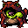
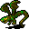
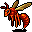

沼 The Swamp
英語版 CrawlWiki の記事「The Swamp」(0.30 向け、2026-09-25 版)の翻訳です。原文の著者は編集履歴をご覧ください。
この記事は 0.30 の時点の内容で、最新の 0.34 とは違うところがあるかもしれません。
| じめじめとした荒れ地である沼は、軟泥、ぬかるみ、蝿、そしてよだれを垂らした大型の肉食モンスターで満ちている。
ひとつの迷宮には、沼と浅瀬のうちどちらか一方の分岐しかない。 この分岐はとても騒がしく、音があまり遠くまで届かない。 この分岐の入口は獣の棲み処の第2〜3階層にある。 この分岐は4階層ある。 この分岐には腐敗のルーンがある。 |
 沼は腐敗のゾットのルーンがある脇道の分岐だ。4階層あり、ありとあらゆる小さな水棲の生き物や沼の虫のほか、ヒドラ、ドラゴン、ワームが住んでいる。
沼は腐敗のゾットのルーンがある脇道の分岐だ。4階層あり、ありとあらゆる小さな水棲の生き物や沼の虫のほか、ヒドラ、ドラゴン、ワームが住んでいる。
沼の入口は獣の棲み処:2〜3 にある。沼が見つかったなら、そのゲームでは浅瀬は見つからない。
基本情報
どの階も広く開けていて、身を隠せるものはたいてい樹木と草木くらいしかない。一面の浅い水脈のあちこちに小さな陸地の島があり、ときおり遺跡やヴォールトも見つかる。薄霧の雲がときどき発生するが、そのマスにほかの雲が入れなくなる以外には何の効果もない。
樹木に火をつけて道を開くこともできる。ただし、燃え広がった森林火災は大量の蒸気を出すうえ、手がつけられなくなることもある!
沼では浅瀬よりもワンドが多く手に入る。エレイオノマも沼渡りの魔女も、倒すとワンドを落とすことがある。ゲームに沼が出たとわかったら、発動スキルを少し上げておくのもいい。
戦略
- 悪臭の雲を吐く沼ドレイクと、猛毒の雲を吐く沼ドラゴンがいるうえ、沼はどこも水だらけなので、毒耐性か雲無効の手段なしでこの分岐に挑むのはおすすめしない。治療の薬をたっぷり用意するか、エリヴィロンの聖杯の清めで混乱と毒を治すという手もあるが、これだけ頻繁に使うとなると高くつく。
- ほかに役立つ耐性が二つある。ゴライアスガエルに対するrCorrと、沼渡りの魔女に対する意志力だ。慎重に戦えばなくても何とかなるかもしれないが、麻痺して装備もぼろぼろに腐食したところをヒドラに全身かじられてから後悔しても遅い。
- 飛行の手段も用意しておきたい。飛べないと、逃げなければならないときに浅い水脈で足を取られ、命取りになりかねない。沼のモンスターの多くは水の中で速くなる。
- 刃物を使うキャラクターは、ヒドラを倒す別の手段も必要になるかもしれない。その方法についてはヒドラの記事に詳しくまとめてある。
モンスター
よく出るモンスター
| l |
w |
w |
F  ゴライアスガエル |
R |
| k  沼ドレイク |
D |
D |
n |
v |
| y |
x |
n |
t |
y  巨大赤色蜂 |
| i |
i |


危険なモンスター
| f |
f |
H |
X |
| i |
i |
n |
k |
ユニーク
| S |
d |
@ |
@ |
| g |
@ |
@ |
X |
| @ |
R |
@ |
I |
| D |
- 最下層の配置によっては、いつもの沼の住人のアンデッド版や、ほかの危険なモンスターに出くわすこともある。最後の階では足元に気をつけよう!
沼:4 のヴォールト
腐敗のゾットのルーンは、沼:4 にあるモンスターだらけのヴォールトの中にある。先に階のほかの場所を片づけておくのが常に賢明だが、このヴォールトの中身と難しさはゲームごとに変わる。
- 沼: 昔からある「swamp」ヴォールトは卵形で、ヒドラ、沼ドラゴン、沼ドレイクが厳重に守っている。ほかに目立った特徴はないが、ヴォールトにたどり着いたときに相手をする敵の数だけで、たやすく押しつぶされかねない。念のため、階段まで戻る道は空けておこう。
- 昔ながら: 0.5 より前の沼の配置に似たヴォールト。大きくて雑然とした部屋に、おなじみの沼ドラゴン、ドレイク、ヒドラがひととおりそろっている。ほかと違うのは、くぼみのひとつにレルネーのヒドラが潜んでいることだ。
- 邪悪:「swamp_vile」は水没した打ち捨てられた神殿で、悪魔と獣が巣くっている。大型の忌まわしきもの、緑の殲滅者、死のウーズ、地獄の獣、さらには触手の怪物といった悪魔のモンスターがいる。
- 城:「grunt_swamp_rune_castle」は正方形のヴォールトで、内側に部屋が4つある。そのひとつにレルネーのヒドラがいる。
- 基本:「swamp_basic_johnstein」は小部屋から3つの入り江に分かれている。わずかな確率でレルネーのヒドラがいる。
- 死と不死: 廊下の先に二つの部屋がある。片方は生命の部屋で、棘の狩人やよろめき歩くマングローブがいる。もう片方は死の部屋で、吸血鬼の騎士2体とゾンビになったレルネーのヒドラがいる。
変更履歴
- 0.31 では、沼:4 のルーンのヴォールトのひとつにいる吸血鬼の騎士2体がグールに置き換わる。
- 0.29 より前は、沼の入口は獣の棲み処:2〜4 にあった。
- 0.27 より前は、沼は騒がしくなかった。
- 0.26 で、エレイオノマ、バニップ、ゴライアスガエル、ウィル・オ・ウィスプ、膨れた抜け殻、沼渡りの魔女という新しいモンスターが加わり、この分岐はずっと危険になった。深い水脈もほとんどなくなった。それまでは、沼は獣の棲み処の分岐のなかでいちばん易しいと言われることが多かった。
- 0.25 で、イレデレンヌルとフェダスの争いをテーマにした新しい沼の最下層が加わった。ここにはアンデッド版のレルネーのヒドラが出る。
- これまでに、沼に住むモンスターの顔ぶれは数えきれないほど変わってきた。脅威にならないモンスターの多くは取り除かれている。
- 0.17 より前は、沼は5階層あった。
- 0.11 で沼の配置が改良され、各階がより小さくまとまり、樹木が増えた。霧も以前より少なくなっている。
| 分岐の一覧 |
|---|
| |
| 関連項目: ポータル |